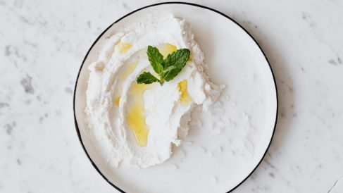

Recetas
Te dejamos recetas de fermentados para preparar de manera artesanal, ¿Y por qué no? En intentar está el aprendizaje!.
Kefir de leche
El kéfir de leche es una bebida cremosa, ácida y con un toque efervescente. Se obtiene por la fermentación de la lactosa contenida en la leche. Tradicionalmente se elabora con nódulos, llamados búlgaros, que parecen pequeñas coliflores. Estos nódulos se suelen vender secos o también, en la red hay muchos grupos de gente que los regala ya que con las sucesivas fermentaciones, crecen bastante. Seguro que cerca de ti encuentras alguien que te lo done.
Ingredientes
- 50gr Kefir
- 1 litro de leche
Preparación
- En caso de utilizar Kéfir deshidratado; Poner los búlgaros secos en un tarro
- Añadir 1 vaso de leche y tapar.
- Dejar fermentar a temperatura ambiente durante 48 horas en un lugar cálido, seco y al abrigo de la luz.
- Colar y repetir el proceso varias veces más hasta que la leche se transforme en kéfir.
- En caso de utilizar Kéfir activo; Dejar fermentar durante 24 horas a temperatura ambiente en ambiente seco, cálido y protegido de la luz
- Colar y ya está listo para consumir.
- Enjuagar los nódulos restantes y volver a usar o conservar.